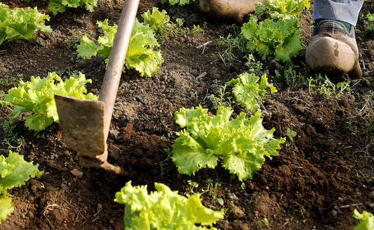
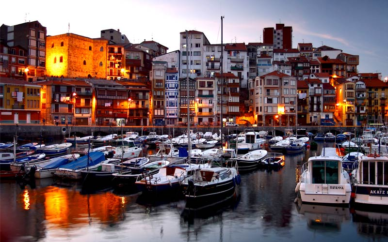

- NUESTRA FILOSOFIA -
RESTAURANTE LARARRANTZA
DE LA HUERTA A TU MESA

En Álava contamos un unas huertas insuperables, con unos productos fuera de serie. Por eso nuestro objetivo es acercar al comensal dichos productos, tratados con el mayor mimo y cariño para ofrecer una experiencia única.
DISFRUTA DE NUESTROS PESCADOS FRESCOS DE LONJA
Vitoria, pese a ser la única ciudad de interior de Euskadi, cuenta con una comunicación directa con los principales puertos pesqueros del Mar Cantábrico, lo que nos brinda la posibilidad de traer al comensal pescado de lonja capturados el mismo día, garantizando una calidad y frescura excelentes.
